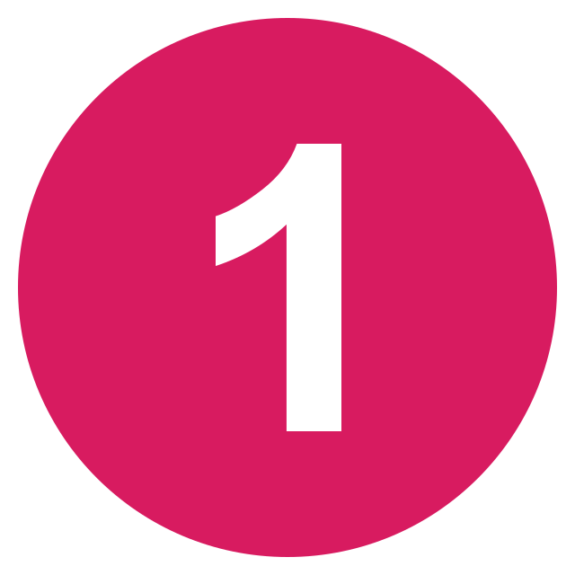
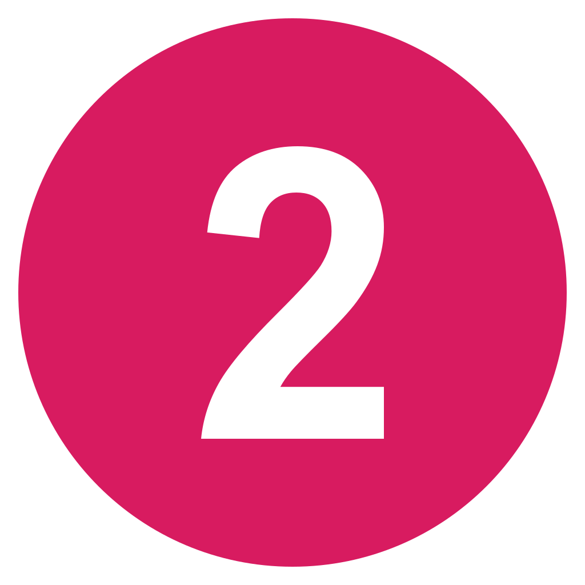
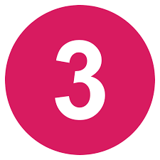
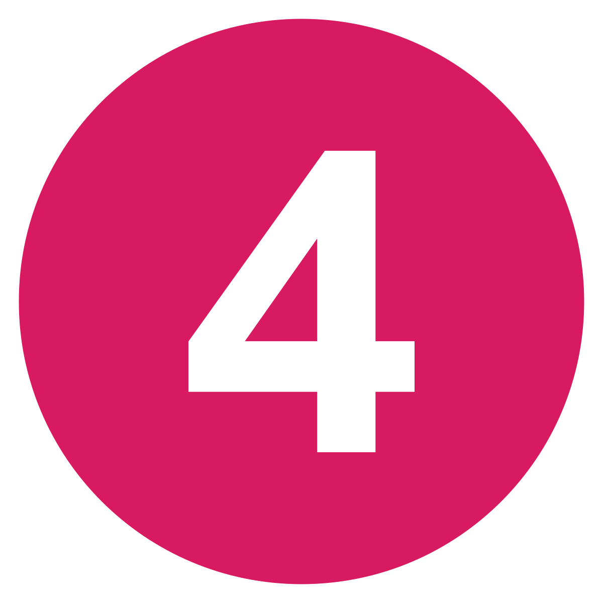
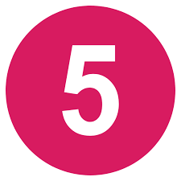
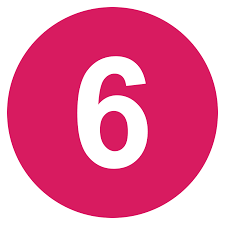
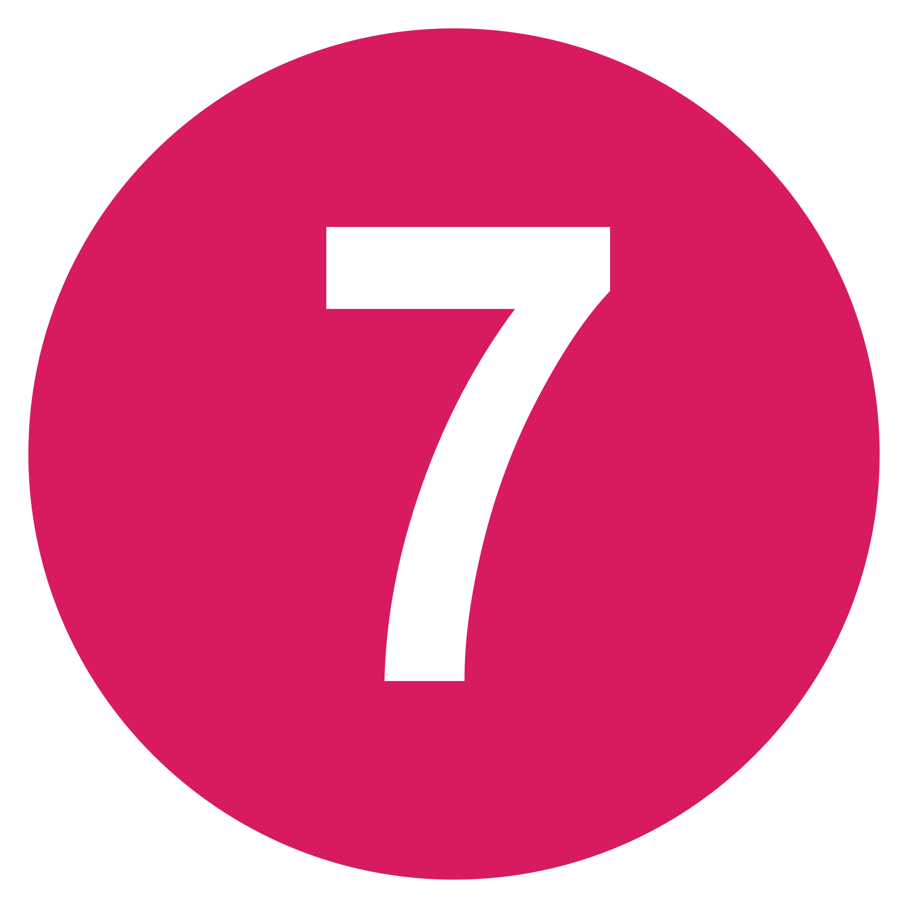
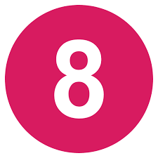
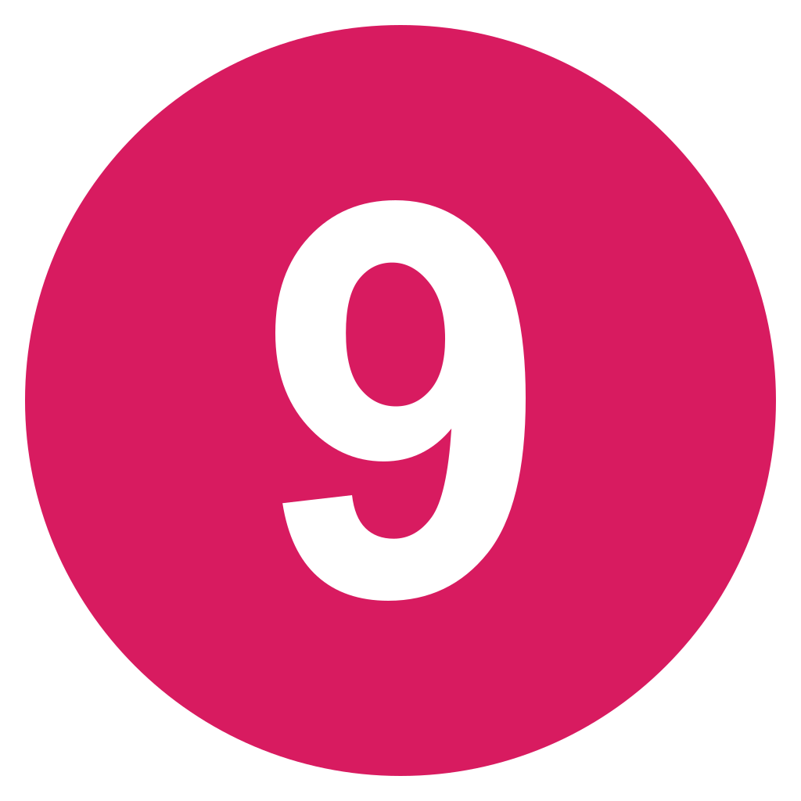
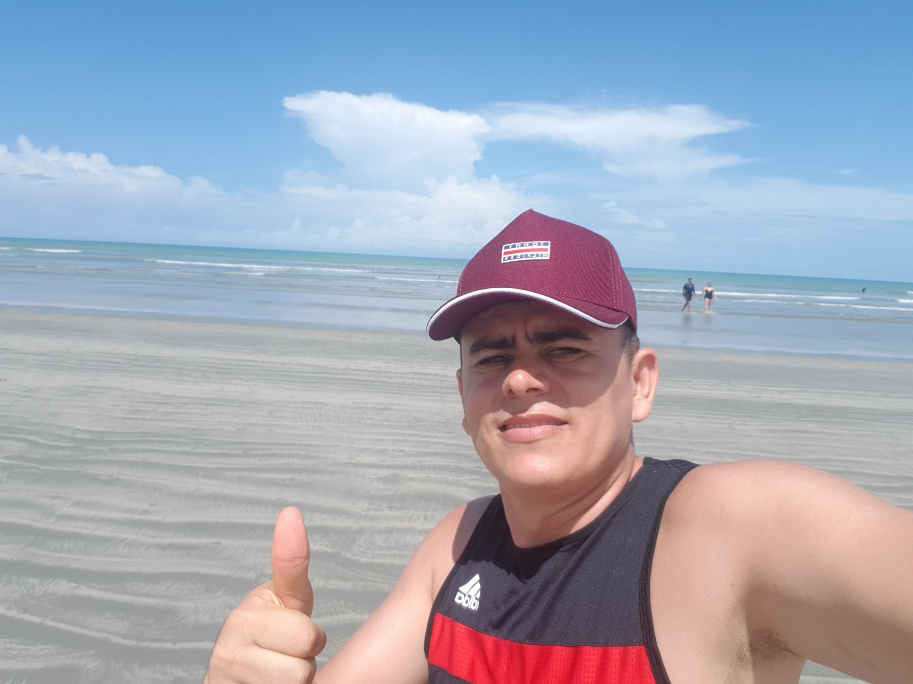

Ter uma landing page oferece várias vantagens para empresas e empreendedores. Veja os principais benefícios de ter uma página online para capturar cliente e lucrar mais.
5 motivos pra você solicitar sua página online
- Foco em um único objetivo:
- Direciona os visitantes para uma ação específica, como inscrever-se em uma newsletter, comprar um produto/serviço ou baixar um e-book.
- Melhoria na taxa de conversão
- Foco em chamadas de ações claras para converter mais visitantes em potenciais clientes em comparação com páginas genéricas.
- Teste e otimização:
- Fácil de otimizar e realizar adaptações de elementos como títulos, imagens e chamadas para ação melhorando continuamente os resultados.
- Coleta de dados de leads:
- Facilidade para incluir formulários que permitem coletar informações valiosas dos visitantes como nomes e endereços de e-mail.
- Segmentação de público:
- Alcança diferentes segmentos de público ajustando a mensagem e a oferta para atender melhor às necessidades do seu público.
- Apoio a campanhas de marketing:
- Proporciona um destino claro para seus visitantes que chegam até sua página por meio de campanhas de marketing específicas, como anúncios pagos, campanhas de e-mail ou promoções nas redes sociais.
- Facilidade de medir resultados:
- Melhor avaliação do sucesso da sua página e das campanhas associadas por ser de fácil rastreio.
- Melhor posição nos buscadores do Google:
- Landing pages bem otimizadas melhoram as buscas no google ajudando a atrair tráfego relevante para a sua oferta a baixo custo.
- Fortalece sua marca:
- Design e mensagens consistentes que ajudam a reforçar a identidade e a imagem da sua marca.
 Custo-benefício:
Custo-benefício:- Manter landing pages é mais econômico do que criar e gerenciar sites completos, especialmente para campanhas e objetivos específicos.
QUEM É FRÀNCISCO CÒSTA?

- Cursando Banco de Dados na Gran Faculdade
- Desenvolvedor Front-End pela Kanzie Academy Brasil
- Habilidades técnica em:
- HTML:5
- CSS3
- Metodolias ágeis
- Desenvolvedor JavsScript
- Node
- React
- MySql